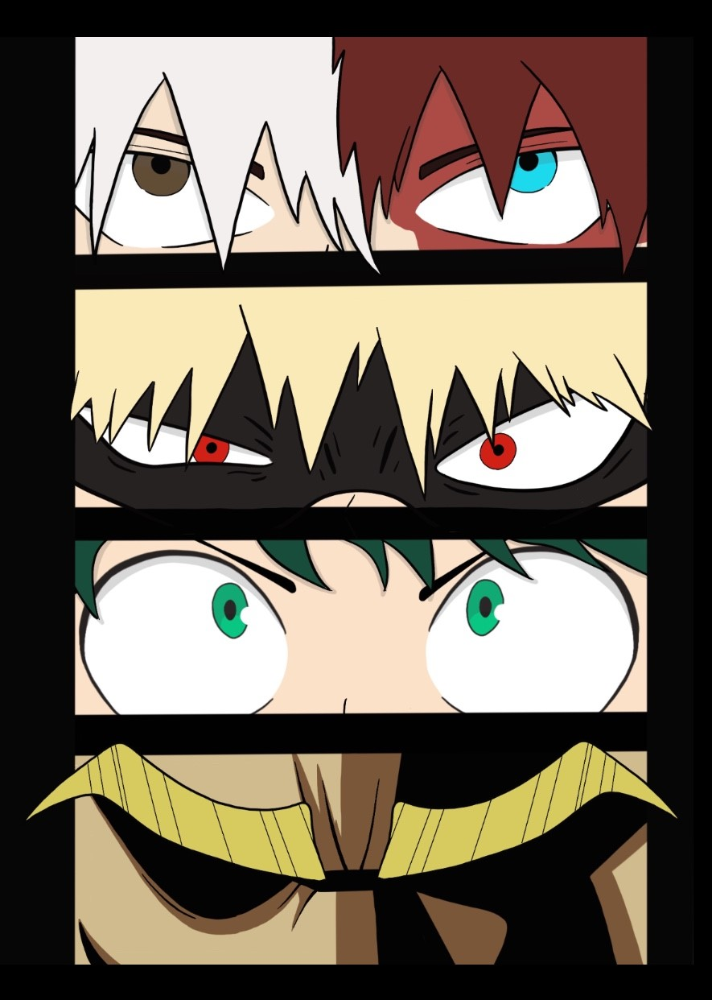

2D Projects

This is a side project I did after watching the Anime My Hero Academia. It is the first of the fan art series I made that I eventually plan to make as art prints!
Here is another fan art piece from the series Naruto. I still need to go back to this print and create a border.

This is another piece of fan art from the animated film Into The SpiderVerse. I loved this movie so much, and it inspired me to make a number of fan art, including this one.

This is a drawing from a 1st birthday party invitation I created. The theme was space, so I drew the baby as an astronaut holding an earth balloon.
This is a sign sheet I created for a baby shower. The idea is that all of the guests are supposed to sign their name on a balloon, like a sign in book.
This is a random drawing I made one night of a character inspired by one of my screenplays.
These are icons I made for Burke's Canoes on the Russian Rivers' website. They are supposed to represent camping, transport, kayaks and canoes, and group canoes.
This was a border I created for Burke's Canoes on the Russian River's website. It acted as a divider in between sections of the page.